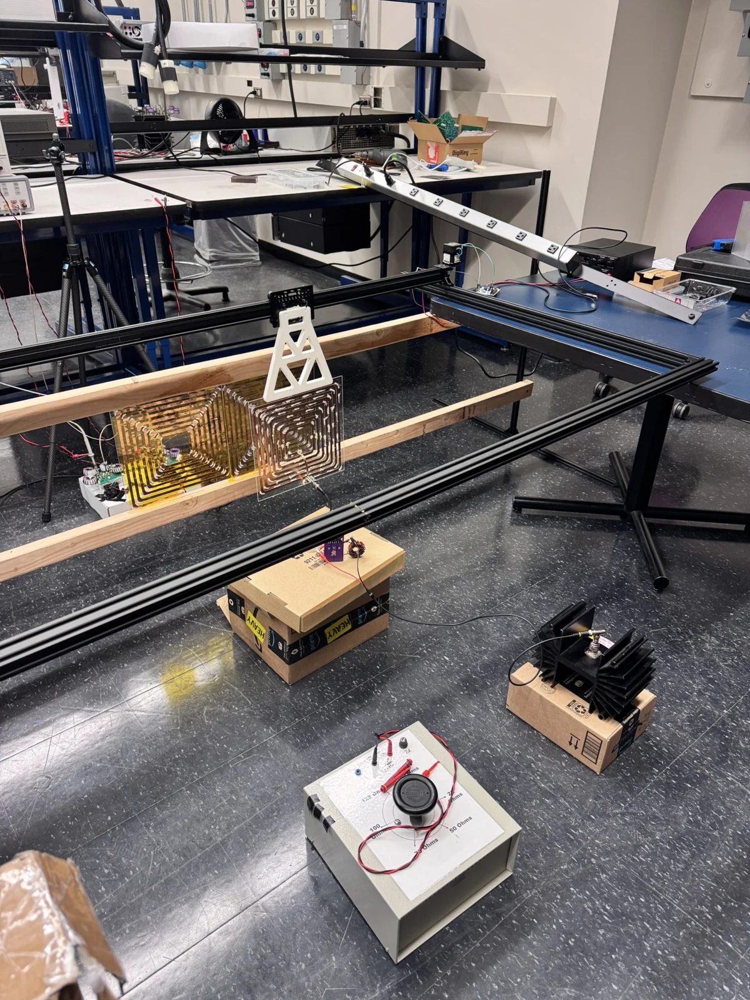

Graduate research · HiPER lab
6.78 MHz dynamic wireless power
- Context
- Graduate research · HiPER lab
- Status
- April 2026-present
- Scope
- Integrated laboratory prototype
Outcome & boundary
Team demonstration: approximately 120 W output and approximately 80% peak DC-to-DC efficiency under tested conditions. Performance varied with receiver position.


Challenge
Transfer power as a receiver moves across stationary transmitter coils. At 6.78 MHz, coil resonance, mechanical clearance and electromagnetic coupling to the frame all matter.
Role & scope
I modeled frame coupling in HFSS, fabricated and characterized copper coils, and independently designed and assembled the belt-driven motion platform. I integrated these with an existing Class ·2 GaN inverter and rectifier. Power and efficiency testing was collaborative.
Technical approach
I imported SolidWorks frame geometry into HFSS and varied coil-to-frame separation to examine mutual inductance, fields and induced currents. VNA measurements guided coil characterization and incremental series-capacitance tuning to 6.78 MHz.
Implementation
The motion platform used aluminum extrusion, a linear gantry, timing belt and NEMA 17 stepper motor. STM32 Nucleo motion control, developed with AI assistance in the Arduino IDE, used trapezoidal acceleration and deceleration. Copper-sheet coils were manually fabricated when waterjet manufacturing was unavailable.
Verification & results
The team demonstrated powered operation with a moving receiver. The archive reports approximately 120 W output, peak DC-to-DC efficiency around 80%, and roughly 60% at less favorable receiver positions. These are experimental observations under tested conditions, not a guaranteed operating envelope or independently attributed personal results.
Trade-offs & next steps
Frame proximity affects coupling, while ceramic capacitor heating and voltage limits motivated separate self-resonant-coil research. Full measurement protocols and publication-cleared hardware images are not included here. No new performance improvement is claimed.
Source: Daniel's engineering experience archive. Photographs show the prototype; outcomes and limitations are described above.
Back to selected projects →